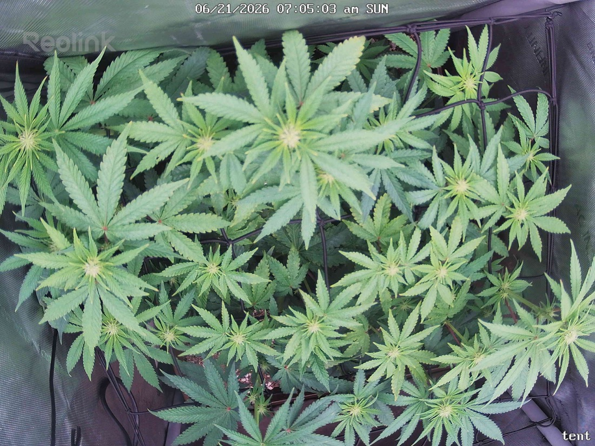

← All reports
Jun 21, 2026
Sun Jun 21, 2026 — 7:05 AM

Prognosis
Daily check-in — 2026-06-21 (Day 18 of 12/12)
- Camera/angle change noted: the frame is wider and flatter than yesterday — consistent with your 6/20 camera adjustment. The canopy reads more spread-out and even across the SCROG, not actually a sudden growth event, so I'm comparing structure cautiously.
- Growth: good lateral fill since yesterday — more individual cola tips poking up through the net, tighter spacing between sites. The scrog is doing its job; the canopy is becoming a flat, multi-headed table rather than one dominant top.
- Color: slightly lighter, brighter green in today's shot vs. the deeper green on 6/20. This is most likely the lighting/exposure plus the water leaf-rinse you did 6/20, not a deficiency — no yellowing pattern, no interveinal chlorosis, veins and margins look clean.
- Posture: leaves are flat and reaching, no tacoing/cupping, no edge curl, no clawing. Praying-flat posture = light level is well-matched after you backed it off a notch from the ~1100 PPFD hot spot.
- Stress/pests: no stippling, webbing, or visible mites in this frame — tracks with your clean inspections since ~6/14. No burnt tips, no bleaching on the top colas despite the recent light. No mold/fluff visible.
- Soil/water: surface looks appropriately moist, not soggy or cracked-dry — fits the 6/20 top+bottom watering. No runoff pooling concerns visible.
- Bud sites: I can count well over a dozen distinct flowering tops across the net; pistils forming at the nodes. Right on schedule for ~2.5 weeks into flower — early bud formation, no stretch problems, no foxtailing.
- Phase check: germ 4/28, flipped 6/3 → you're ~18 days into flower. Plant is exactly where it should be: stretch tapering, flower sites set, healthy multi-cola scrog canopy.
Suggested next actions: No action needed. Keep the slightly-reduced light where the top cola sits in the ~700–900 range (avoid the 1100 hot spot), maintain your watering cadence, and keep doing quick underside mite checks for another week or two to be safe.
Overall: Healthy, on-track Day-18 flowering plant — strong even canopy, no stress or pest signs, prognosis excellent.